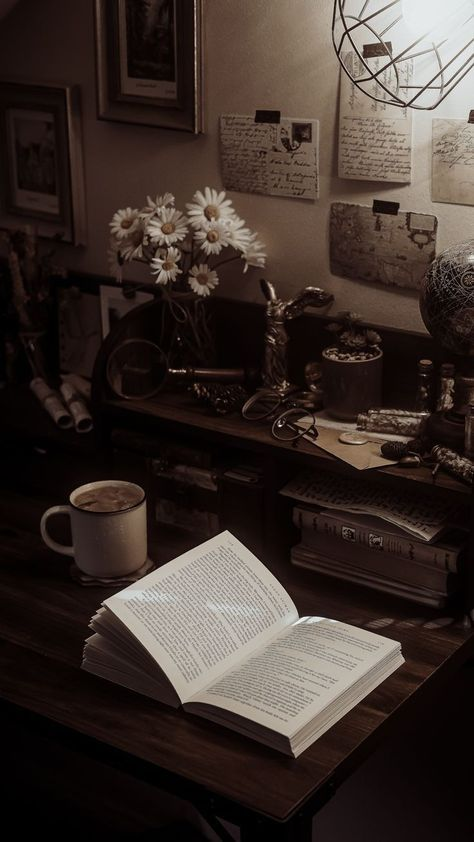
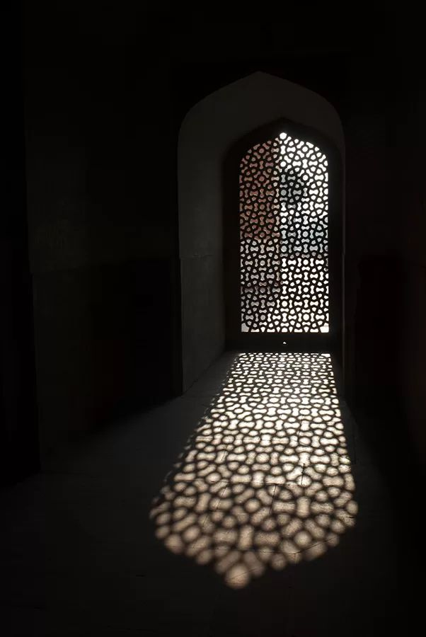
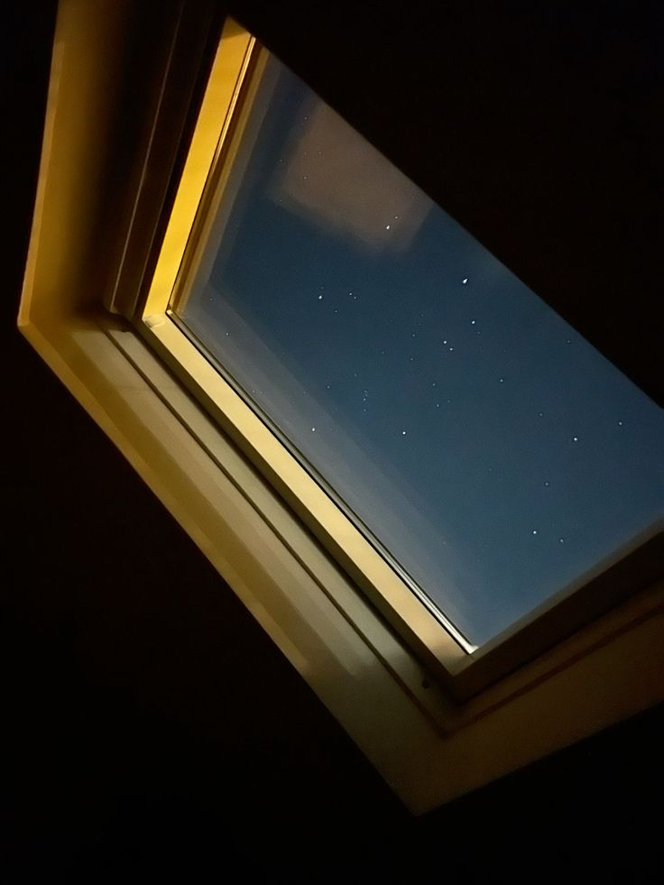

"Jis haddi se Hazrat Ayesha رضي الله عنها gosht kha leti thin..."
"Rasoolullah ﷺ usi haddi ko lekar usi jagah se gosht khate."
Masjid mein baithe kai log beikhtiyaar muskura diye.
Hazrat ne kaha,
"Ye sirf ek amal nahi tha..."
"Ye mohabbat ka izhar tha."
"Kyunki Islam ne kabhi mohabbat se mana nahi kiya..."
"Islam ne mohabbat ko paak tareeqe se jeena sikhaya."
Phir Hazrat ne doosra waqia sunaya.
"Ek safar ke dauran..."
"Rasoolullah ﷺ ne Sahaba-e-Kiraam ko aage bhej diya."
"Phir Hazrat Ayesha رضي الله عنها se farmaya..."
'Aao, daud lagate hain.'
"Hazrat Ayesha رضي الله عنها farmati hain..."

✦ Sabr Ka Imtihaan ✦
"Us daud mein main jeet gayi."
Masjid mein halki si muskurahat phail gayi.
Hazrat bhi muskuraye.
"Kuch saal baad..."
"Jab Hazrat Ayesha رضي الله عنها ka wazan badh gaya..."
"Ek baar phir daud hui."
"Is baar Rasoolullah ﷺ jeet gaye."
"Aur muskurakar farmaya..."
'Yeh us pehli daud ka badla hai.'
Hazrat ne kaha,
"Dekhiye..."
"Ye woh Nabi hain..."
"Jinke kandhon par poori ummat ki zimmedari thi."
"Magar phir bhi..."
"Woh apni biwi ke saath muskurane..."
"Hansne..."
"Aur waqt guzarne ke liye waqt nikalte the."
Phir Hazrat ne teesra waqia bayan kiya.
"Hazrat Ayesha رضي الله عنها kabhi kabhi poocha karti thin..."
'Ya Rasoolallah ﷺ... aapki mohabbat mere liye kaisi hai?'
"Rasoolullah ﷺ farmate..."
'Ek mazboot giraah ki tarah.'
Hazrat ne apni ungliyon se giraah banane ka ishara karte hue kaha,
"Phir Hazrat Ayesha رضي الله عنها kabhi kabhi muskurakar poochti thin..."
'Giraah ab bhi waise hi hai?'
"Rasoolullah ﷺ farmate..."
'Haan... waise hi mazboot hai.'
Masjid ki fiza ajeeb sukoon se bhar gayi thi.
Har shakhs khamoshi se bayan sun raha tha.
Aur Fahad...
Woh bhi sir jhukaye baitha tha.
Har waqia uske dil ke kisi kone ko chhoo raha tha.
Hazrat ne phir ek aur waqia bayan farmaya.
"Ek martaba Masjid-e-Nabawi ke sehan mein Habsha ke kuch log neze se kartab dikha rahe the."
"Hazrat Ayesha رضي الله عنها ne unhe dekhne ki khwahish zahir ki."
"Rasoolullah ﷺ unke aage is tarah khade ho gaye ke Hazrat Ayesha رضي الله عنها apna chehra Aap ﷺ ke kandhe se laga kar aaram se woh manzar dekhti rahi."
Hazrat ne muskurate hue farmaya,
"Sochiye..."
"Ummat ka rehnuma..."
"Allah ka Mehboob..."
"Lekin apni biwi ki ek chhoti si khwahish poori karne ke liye itni der tak khade rahe..."
"Yahan tak ke Hazrat Ayesha رضي الله عنها ka khud dil bhar gaya."
Hazrat kuch lamhe ke liye khamosh hue.
Phir farmaya,
"Mohabbat ka matlab sirf bade tohfe nahi hote..."
"Kabhi kabhi kisi ki chhoti si khushi ke liye apna waqt de dena bhi mohabbat hoti hai."
Hazrat ne phir farmaya,
"Rasoolullah ﷺ Hazrat Ayesha رضي الله عنها ko aksar ek pyare se naam se pukarte the."
"Humaira."
"Ye mohabbat ka naam tha."
"Narmi ka naam tha."
"Apnayat ka naam tha."
Hazrat ne kaha,
"Zara sochiye..."
"Jo shakhs poori insaniyat ke liye rehmat bankar aaya..."
"Woh apne ghar mein kitni narmi aur muhabbat ke saath rehta hoga."
Phir Hazrat ne ek aur waqia sunaya.
"Hazrat Amr bin Aas رضي الله عنه ne ek martaba Rasoolullah ﷺ se poocha..."
'Ya Rasoolallah ﷺ, aapko sabse zyada mohabbat kis se hai?'
Hazrat ne kaha,
"Logon ko laga hoga ke kisi Sahabi ka naam lenge..."
"Lekin Rasoolullah ﷺ ne foran jawab diya..."
'Ayesha.'
Hazrat ne masjid ki taraf dekhte hue kaha,
"Dekhiye..."
"Nabi ﷺ ne apni mohabbat ko kabhi chhupaya nahi."
"Na usme sharm mehsoos ki."
"Na usse kamzori samjha."
"Balki halal mohabbat ka izhar bhi sunnat bana diya."
Phir Hazrat ne aakhri waqia bayan kiya.
"Jab Rasoolullah ﷺ ki tabiyat mubarak zyada nasaz hui..."
"To Aap ﷺ ne apne aakhri ayyaam Hazrat Ayesha رضي الله عنها ke hujre mein guzare."
"Aur jab duniya se pardah farmaya..."
"To Aap ﷺ ka sar Hazrat Ayesha رضي الله عنها ki god mein tha."
Hazrat ki awaaz dheemi ho gayi.
"Ye sirf wafat ka waqia nahi tha..."
"Ye ek paak mohabbat ki takmeel thi."
Ye sab waqiyaat sunte sunte...
Masjid mein gehri khamoshi chha gayi.
Har shakhs apne apne andaaz mein soch raha tha.
Aur Fahad...
Uska dil ajeeb sukoon aur soch mein doob chuka tha.
Usse pehli baar ehsaas hua...
Ke mohabbat sirf kisi ko pa lene ka naam nahi...
Balki uski izzat, uska khayal aur uske saath Allah ki raza ke mutabiq zindagi guzarne ka naam hai.
Hazrat ne kuch lamhe ke liye khamoshi ikhtiyar ki.
Phir narm lehje mein farmaya,
"Mere pyare Islami bhaiyo..."
"Aaj humne Rasoolullah ﷺ ki mohabbat ke chand waqiyaat sune."
"Lekin ye waqiyaat sirf kahaniyan nahi hain..."
"Ye hamari zindagi ke liye uswa hain."
Hazrat ne majme ki taraf dekhte hue farmaya,
"Aaj ka daur dekhiye..."
"Log mohabbat ko sirf jazbaat ka naam samajhte hain."
"Kisi ko dekh liya..."
"Baat kar li..."
"Number le liya..."
"Har roz ghanton guftagu hone lagi..."
"Aur usi ko mohabbat samajh liya."
Phir Hazrat ki awaaz mein thodi sanjeedgi aa gayi.
"Magar Rasoolullah ﷺ ne hume ye nahi sikhaya."
"Aap ﷺ ne hume paak mohabbat sikhayi."
"Aisi mohabbat..."
"Jisme haya ho."
"Jisme izzat ho."
"Jisme Allah ki raza ho."

✦ Islamic Archway ✦
"Jisme gunah ki milawat na ho."
Hazrat ne apni ungli uthate hue farmaya,
"Yaad rakhiye..."
"Mohabbat karna gunah nahi hai."
"Lekin mohabbat ke naam par Allah ki nafarmani karna..."
"Ye zaroor gunah hai."
Masjid mein gehri khamoshi chha gayi.
Hazrat ne baat jaari rakhi.
"Kitne afsos ki baat hai..."
"Log kehte hain..."
'Uske bina jee nahi sakta.'
"Lekin jab Allah aur uske Rasool ﷺ ke hukm ki baat aati hai..."
"To wahi log apni mohabbat ko Allah ke hukm se upar rakh dete hain."
Hazrat ne farmaya,
"Rasoolullah ﷺ ki zindagi hume batati hai..."
"Ke halal mohabbat hi asal mohabbat hai."
"Woh mohabbat..."
"Jo nikah tak le kar jaaye."
"Na ke gunah tak."
Phir Hazrat ne ek aur baat farmayi.
"Agar kisi ke dil mein kisi ke liye mohabbat paida ho jaaye..."
"To sabse pehle Allah se dua kare."
"Apni nigahon ki hifazat kare."
"Apni zubaan ki hifazat kare."
"Apne dil ko haram raste par chalne se bachaye."
"Kyunki jis mohabbat ki bunyaad taqwa par rakhi jaati hai..."
"Allah usme barkat ata farmata hai."
Hazrat ki awaaz dheemi ho gayi.
"Aur jis mohabbat ki bunyaad gunah par rakhi jaati hai..."
"Uska anjaam aksar aansuon par khatam hota hai."
Kuch lamhe tak poori masjid mein khamoshi chhayi rahi.
Har shakhs apne apne andaaz mein soch raha tha.
Hazrat ne aakhir mein farmaya,
"Allah Ta'ala hume Rasoolullah ﷺ ki sunnat ke mutabiq mohabbat karne ki taufeeq ata farmaye."
"Hamare dilon ko paak rakhe."
"Hamari nigahon ko paak rakhe."
"Aur agar kisi ke naseeb mein mohabbat likhi hai..."
"To us mohabbat ko nikah ki surat mein mukammal farma de."
"Aameen."
Hazrat ki zubaan se "Aameen" nikla...
Aur poori masjid ek saath goonj uthi.
"Aameen."
Fahad ab bhi wahin baitha tha.
Uski nazrein jhuki hui thin.
Aaj usne pehli baar mehsoos kiya...
Ke uska raasta ghalat nahi tha.
Usne Aamina se mohabbat zaroor ki thi...
Magar kabhi usse Allah ki hudood se bahar ja kar paane ki tamanna nahi ki.
Uske dil mein sirf ek hi khwahish thi...
Agar woh kabhi uski zindagi ka hissa bane...
To sirf nikah ke paak rishte ke zariye.
Aur shayad...
Aaj ke bayan ne us irade ko pehle se bhi zyada mazboot kar diya tha.
Bayan khatam ho chuka tha.
Log dheere dheere uth kar jaane lage.
Koi Hazrat se musafaha kar raha tha...
Koi masjid ke bahar apne doston se baat kar raha tha...
Aur koi chup-chaap ghar ki taraf nikal gaya.
Magar Fahad...
Ab bhi wahi baitha hua tha.
Uski nazrein ja-e-namaz par tiki hui thin.
Aaj ka bayan sirf uske kaanon tak nahi pahuncha tha...
Seedha uske dil mein utar gaya tha.
Usne dheere se gehri saans li.
Phir dil hi dil mein socha,
"Ya Allah..."
"Agar meri mohabbat mein zara si bhi khudgarzi ho..."
"To use mere dil se nikaal dena."
"Aur agar ye mohabbat meri duniya aur aakhirat ke liye behtar hai..."
"To ise sirf halal tareeqe se meri taqdeer bana dena."
Usne apni aankhen band kar li.
Na jaane kyun...
Aaj uske dil par ek ajeeb sa sukoon tha.
Ab usse kisi jaldi ka ehsaas nahi ho raha tha.
Na izhar ki...
Na jawab ki...
Na hi kisi nateeje ki.
Usne sirf itna samajh liya tha...
Ke agar ye rishta uske naseeb mein likha hai...
To Allah us tak pahunchane ke liye koi na koi sabab zaroor paida karega.
Aur agar nahi likha...
To Allah uske dil ko bhi razi kar dega.
Fahad dheere se uth khada hua.
Masjid se bahar nikla.
Dhoop ab kuch naram pad chuki thi.
Itwaar ki dopahar apni rawani se guzar rahi thi.
Woh aahista aahista ghar ki taraf chal pada.
Lekin aaj...
Uske qadam pehle se zyada mutma'in the.
Mohabbat ab bhi thi...
Magar us mohabbat ke saath...
Tawakkul bhi aa chuka tha.
Itwaar bhi dekhte dekhte guzar gaya.
Hazrat ka bayan...
Ab bhi Fahad ke zehan mein goonj raha tha.
Us din usne sirf mohabbat ke waqiyaat hi nahi sune the...
Balki mohabbat ka asal matlab samjha tha.
Aur shayad...
Isi liye uske dil ka irada pehle se bhi zyada mazboot ho gaya tha.
Dekhte hi dekhte...
Monday aa gaya.
Daftar ka mahaul hamesha ki tarah masroof tha.
Subah se hi har koi apne apne kaam mein laga hua tha.
Reports...
Clients...
Calls...

✦ Midnight Stars ✦
Aur beech beech mein roz ki halki phulki guftagu.
Kuch der baad...
Aamina apni desk se uthi aur Fahad ke paas aayi.
"Ek baat kehni thi."
Fahad ne screen se nazar hata kar uski taraf dekha.
"Ji, boliye."
"Mujhe next Monday se ek hafte ki chhutti chahiye."
Ye sunte hi...
Na jaane kyun...
Fahad ka dil ek pal ke liye thehar sa gaya.
Ek hi lamhe mein uske zehan mein kitne hi khayal aa gaye.
"Kahin..."
"Rishta dekhne to nahi ja rahe..."
"Ya ghar mein koi aur baat..."
Magar agle hi pal usne apne aap ko sambhal liya.
Ab woh Team Leader tha.
Aur us waqt usse sirf professional tareeqe se baat karni thi.
Usne bilkul aam lehje mein poocha,
"Achha... kis liye chhutti chahiye?"
Aamina ne narmi se jawab diya,
"Ghar walon ke saath Ajmer jaana hai."
"Isliye socha pehle hi bata doon."
Fahad ke dil ne chupke se sukoon ki saans li.
"Achha..."
"Theek hai."
"Main bhi Sir ko inform kar dunga."
"Lekin ek baar aap bhi unse baat kar lijiye."
"Ji."
Aamina ne sir hila kar kaha.
Baat wahi khatam ho gayi.
Office ka kaam phir apni rawani se chalne laga.
Dopahar kab guzar gayi...
Pata hi nahi chala.
Shaam ke kareeb saadhe chhe baj rahe the.
Har koi apna pending kaam khatam karne mein laga hua tha.